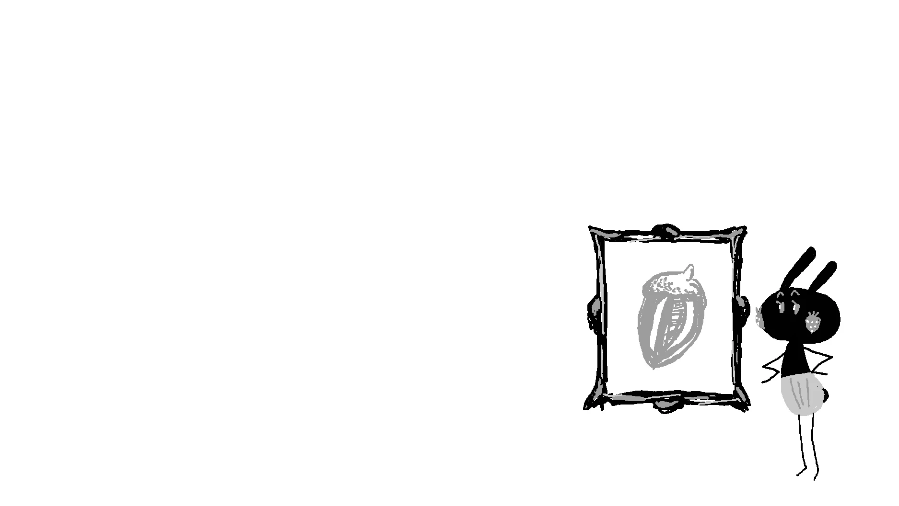

PICTURE BOOK
『てんしのクレヨン』
約10年の時を経て、絵本になりました。
小学生のころに生まれた物語に、絵を添えました。たくさんの人に見守られてきた、小さな天使のお話です。

季節の展示 ─ 秋、くろうさとどんぐり
WELCOME
NOW · 2026
作品づくりの歩みから、ひとつのお知らせ。
PICTURE BOOK
約10年の時を経て、絵本になりました。
小学生のころに生まれた物語に、絵を添えました。たくさんの人に見守られてきた、小さな天使のお話です。
WORKS
点描、くろうさ、絵本。それぞれの小さな世界をご覧ください。